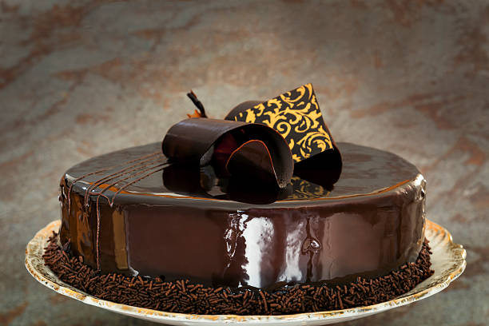

Chocolate Fudge

Description
This was my aunt's recipe for fudge, passed down through the family. It's better than any fudge I've ever had at the Jersey shore, and easy enough to whip up in 15 minutes or so.
Ingredients
- 1 (7 ounce) jar marshmallow creme
- 1 ½ cups white sugar
- ⅔ cup evaporated milk
- ¼ cup butter
- ¼ teaspoon salt
- 2 cups milk chocolate chips
- 1 cup semisweet chocolate chips
- ½ cup chopped nuts
- 1 teaspoon vanilla extract
Steps
-
Line an 8x8 inch pan with aluminum foil. Set aside.
-
In a large saucepan over medium heat, combine marshmallow cream, sugar, evaporated milk, butter and salt. Bring to a full boil, and cook for 5 minutes, stirring constantly.
-
Remove from heat and pour in semisweet chocolate chips and milk chocolate chips. Stir until chocolate is melted and mixture is smooth. Stir in nuts and vanilla. Pour into prepared pan. Chill in refrigerator for 2 hours, or until firm.